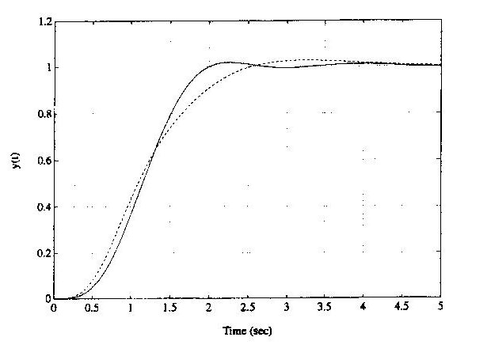
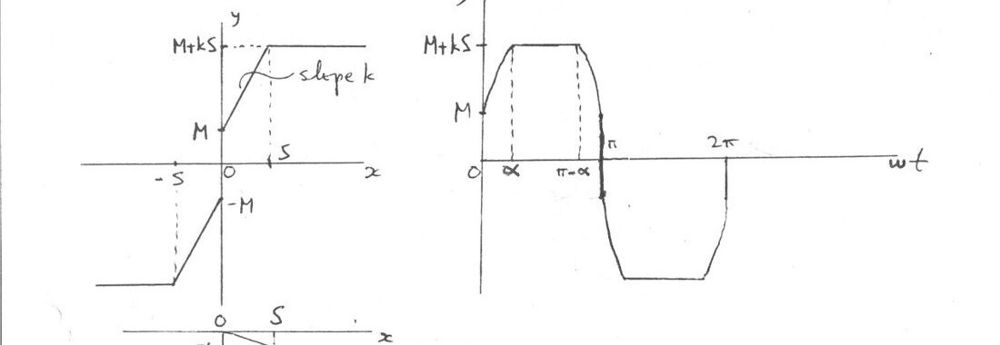

· EEM322
EEM322 Control Systems: Robust PID Design, Kharitonov Test and Describing Function Solutions (Uraz, EEM419/EEM417)
EEM322 – Denetim Sistemleri · 09.04.2015 · 16.10.2026
This post brings together two groups of handwritten solutions found in the "Control" subfolder of the EEM322 Control Systems folder. Both are scanned pages written by the course instructor Prof. Dr. Alper Uraz:
- The Chapter 8 problems (Ex. 8.7, 8.8, 8.9(c)) in the folder named "EEM419-Ch8-Prob": robust control. According to the file name, these belong to the course coded EEM419.
- Two pages named "EEM417NLDF": the describing function of a nonlinear element. According to the file name, these belong to the course EEM417.
They are included here because the documents were stored in the EEM322 folder; the documents do not state their dates. The original scanned pages can be downloaded as a ZIP at the end of the post. (A phase portrait page in the same folder was not published, because it was scanned from a printed textbook.)
Ex. 8.7: PID design with the ITAE criterion for a system with uncertain parameters
System structure: prefilter P(s) → summing junction → controller C(s) → plant G(s), unity feedback.
G(s) = K / [s(s + b)(s + 4)], K ∈ [1, 3], b ∈ [1, 3]; nominal values K = 2, b = 2.
Required: ITAE (integral of time-weighted absolute error) performance with peak time Tp < 2.5 s.
- The worst-case performance is obtained with K = 1 and b = 1: G₁(s) = 1 / [s(s + 1)(s + 4)].
- By simulation, ω0 = 2.38 is chosen to satisfy Tp = 2.5 s. From the zero position error ITAE table (Table 7.3), the fourth-order closed-loop transfer function is:
T(s) = ω0⁴ / (s⁴ + 2.1ω0 s³ + 3.4ω0² s² + 2.7ω0³ s + ω0⁴) = 32.08 / (s⁴ + 5s³ + 19.26s² + 36.4s + 32.08)
- PID controller: C(s) = Kp + Ki/s + Kd·s = (Kd·s² + Kp·s + Ki)/s ⇒ T₁(s) = C(s)G₁(s)/[1 + C(s)G₁(s)] = (Kd·s² + Kp·s + Ki) / [s⁴ + 5s³ + (4 + Kd)s² + Kp·s + Ki]. The overall transfer function is T(s) = P(s)T₁(s).
- Equating the characteristic equations: s⁴ + 5s³ + 19.26s² + 36.4s + 32.08 = s⁴ + 5s³ + (4 + Kd)s² + Kp·s + Ki ⇒ Kp = 36.4, Ki = 32.08, Kd = 15.26.
- The prefilter, such that T(s) = P(s)T₁(s): P(s) = Ki/(Kd·s² + Kp·s + Ki) = 32.08/(15.26s² + 36.4s + 32.08).

Ex. 8.8: Robust stability of the design (Kharitonov test)
With the PID from Ex. 8.7, without the prefilter, the closed-loop transfer function is:
C(s)G(s)/[1 + C(s)G(s)] = K(Kd·s² + Kp·s + Ki) / [s²(s + b)(s + 4) + K(Kd·s² + Kp·s + Ki)]
For Kp = 36.4, Ki = 32.08, Kd = 15.26 and K ∈ [1, 3], b ∈ [1, 3], the characteristic equation is:
Δ(s) = s⁴ + (b + 4)s³ + (4b + 15.26K)s² + 36.4K·s + 32.08K
Writing p(s) = q₀ + q₁s + q₂s² + q₃s³ + s⁴, the coefficient ranges are:
| Coefficient | Expression | Range |
|---|---|---|
| q₀ | 32.08K | [32.08, 96.24] |
| q₁ | 36.4K | [36.4, 109.2] |
| q₂ | 4b + 15.26K | [19.26, 57.78] |
| q₃ | b + 4 | [5, 7] |
Since n = 4, it suffices to test only two Kharitonov polynomials:
- P₁⁺⁻(s) = q₀⁺ + q₁⁻s + q₂⁻s² + q₃⁺s³ + s⁴ = 96.24 + 36.4s + 19.26s² + 7s³ + s⁴
- P₂⁺⁺(s) = q₀⁺ + q₁⁺s + q₂⁻s² + q₃⁻s³ + s⁴ = 96.24 + 109.2s + 19.26s² + 5s³ + s⁴
Routh table for P₁⁺⁻(s):
| Row | 1st column | 2nd column | 3rd column |
|---|---|---|---|
| s⁴ | 1 | 19.26 | 96.24 |
| s³ | 7 | 36.4 | |
| s² | 14.06 | 96.24 | |
| s¹ | −11.51 | ||
| s⁰ | 96.24 |
There are two sign changes in the first column; the overall design is not robustly Hurwitz stable. Since P₁⁺⁻(s) is not Hurwitz, there is no need to check P₂⁺⁺(s); had P₁⁺⁻(s) been Hurwitz, P₂⁺⁺(s) would also have had to be checked to show robust stability.
Ex. 8.9(c): Polynomial with interval coefficients
p(s) = (3 + q₁) + (4 − q₂)s + 21s² + (6 + 2q₃)s³ + s⁴, q₁ ∈ [−1, 1], q₂ ∈ [0, 2], q₃ ∈ [1, 2]
- The uncertainties are lumped into the coefficients: p̃(s) = q̃₀ + q̃₁s + 21s² + q̃₃s³ + s⁴; q̃₀ = 3 + q₁ ∈ [2, 4], q̃₁ = 4 − q₂ ∈ [2, 4], q̃₃ = 6 + 2q₃ ∈ [8, 10].
- That is, p̃(s) = [2, 4] + [2, 4]s + 21s² + [8, 10]s³ + s⁴. For n = 4, two polynomials are tested: P̃₁⁺⁻(s) = 4 + 2s + 21s² + 10s³ + s⁴ and P̃₂⁺⁺(s) = 4 + 4s + 21s² + 8s³ + s⁴.
- Routh tables: for P̃₁⁺⁻ the first column is 1, 10, 20.8, 0.08, 4; for P̃₂⁺⁺ it is 1, 8, 20.5, 2.44, 4.
- Since both polynomials are Hurwitz, p(s) is robustly Hurwitz stable.
Ex. 1(f): Describing function
The nonlinear element: an odd-symmetric characteristic (saturation with a jump, no dead zone) that jumps by ±M at x = 0, has slope k for |x| < S, and saturates at M + kS for |x| ≥ S.

For the input x = X sin ωt (X > S), the first half period of the output is:
| Interval | y(t) |
|---|---|
| 0 < ωt < α | M + kX sin ωt |
| α < ωt < π − α | M + kS |
| π − α < ωt < π | M + kX sin ωt |
where sin α = S/X, i.e. α = sin⁻¹(S/X).
- Since the output is an odd function, the fundamental component is y₁(t) = Y₁ sin ωt; Y₁ = (1/π)∫₀^2π y(t) sin ωt d(ωt) = (4/π)∫₀^π/2 y(t) sin ωt d(ωt).
- Y₁ = (4/π)[∫₀^α (M + kX sin ωt) sin ωt d(ωt) + ∫α^π/2 (M + kS) sin ωt d(ωt)]
- = (4/π)[M∫₀^α sin ωt d(ωt) + (kX/2)∫₀^α (1 − cos 2ωt) d(ωt) + (M + kS)∫α^π/2 sin ωt d(ωt)]
- = (4/π)[−M cos α + M + kX(α/2 − ½ sin α cos α) + (M + kS) cos α]
- = (4/π)[M + (kX/2) sin⁻¹(S/X) + (kS/2)√(1 − S²/X²)]
The describing function of the given nonlinearity:
N = (Y₁/X)∠0° = 4M/(πX) + (2k/π)[sin⁻¹(S/X) + (S/X)√(1 − S²/X²)]
N is a real quantity (there is no phase shift in the output).